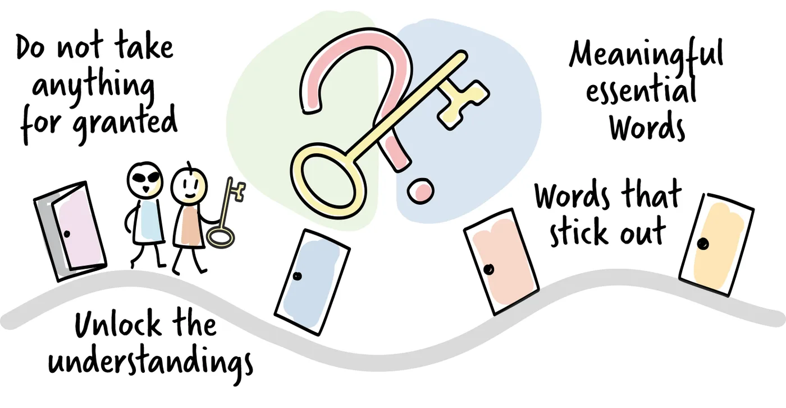

Curiosity

Successful communication in any context, between peers, within a hierarchy, or between a coach and a coachee, requires active participation from everyone involved. A coachee may be genuinely interested in improving their situation, but they need the coach's active interest and skill to find a way to do it.
An interest in people is one of the fundamental qualities a coach needs, both to do the job well and to enjoy it. Without genuine curiosity about the person in front of you and their way of thinking, it is difficult to listen with interest and to understand a situation that affects them. Several things can stop us from following our curiosity, and most of them are rooted in fear or false assumptions.
We may fear that asking too many questions makes us look inexperienced or uninformed. Some preparation is needed in a coaching situation, but we are not the expert on another person's personal or professional situation. They are. Asking questions to build understanding is natural. Taking notes of important points, so that we do not stumble over uncertainties or repeat topics, shows interest and engagement. Curiosity is the key that opens up a deeper and more useful conversation.
Keywords
Keywords are a tool for gaining better insight into how someone thinks. By noting words or patterns of speech that come up often in a person's story, we can identify topics or ideas that matter to them and deserve a closer look. Writing keywords down can be part of ongoing note-taking, to highlight recurring themes and to lead to further questions.
Themes, situations and keywords may recur within and across contexts, but that does not mean the same solution applies. A keyword may open the door to a topic, but it is up to us to walk through it and discover the causes and effects behind it.
A simple note-taking technique helps: draw a vertical line down the page and write keywords and observations on the left, and your own thoughts and hypotheses on the right. Underline or box keywords that come up repeatedly. This keeps what the person said separate from what you think about it.
Knowing when to stop
Past a certain point, asking questions and uncovering underlying themes becomes less helpful. Curiosity is useful, but curb it before digging too deep. If the questioning goes on too long, it can cause confusion and even discomfort, and the coachee may feel that they are not giving satisfying answers. The "five whys" technique is a useful guide: digging down about five layers is usually enough to find a root cause.
Do not take anything for granted. Let your curiosity guide you towards a deeper understanding of the other person's situation. Ask questions, write down keywords, notice how comfortable they are, and steer the conversation towards topics that are relevant to them.
Practice
Questions from keywords. Pair up with a colleague. Ask them to tell you about a situation from their day, for example how they prepared for work this morning. Write down keywords as you hear them, and mark the ones that repeat. Then ask about them, starting with the most frequent or notable ones. Aim for neutral clarifying questions such as "Tell me more about …", "What do you mean when you say …?", "What was the impact of …?" or "Why do you think they acted that way?" Afterwards, reflect on what the technique showed you.